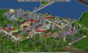
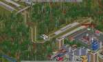
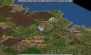
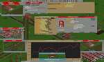
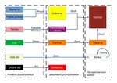
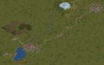

O čem hra je

OpenTTD je opensourcová předělávka hry Transport Tycoon Deluxe (z roku 1994). Cíl je jediný, rozvíjet dopravní firmu. Ať už si člověk zvolí vlaky, autobusy, náklaďáky, lodě či letadla, určitě si užije spoustu legrace. Hra podporuje různá rozšíření stahovatelná přímo ze hry, která mohou hru proměnit v realistický simulátor s reálnými stroji, nebo si může zvolit zábavný svět hraček či cokoliv mezi tím.
Tipy a triky
- Mrkněte na youtube pro návody a na openttd wiki pro další rady.
- V nastavení lze zapnout zavírání oken pravým tlačítkem myši. První věc co po instalaci dělám :-)
Hodnocení
- Klady:
- Roztomilá grafika a všudy přítomný pohyb rozličných strojů i prostředí
- Tvorba obřích kolejových sítí
- Zvuky a hudba
- Grafy
- Zápory:
- Časová náročnost
Hardwarové požadavky
| Součást | Minimum | Doporučeno |
|---|---|---|
| Procesor | Pentium 233 MHz MMX | Code2Duo 2GHz |
| Grafická karta | VGA 640x480x8 | DirectX9 |
| Paměť RAM | 256MB | 1GB |
| Disk | 50MB | 300MB |
Obrázky ze hry





